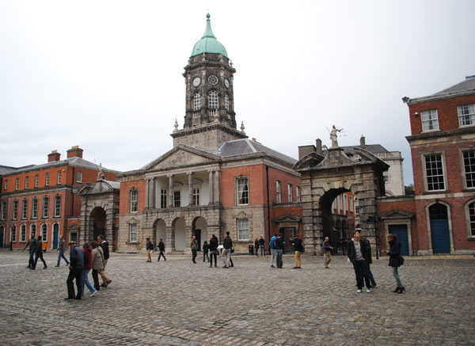
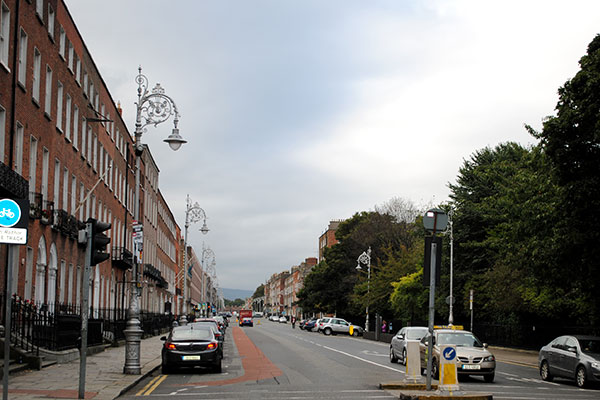
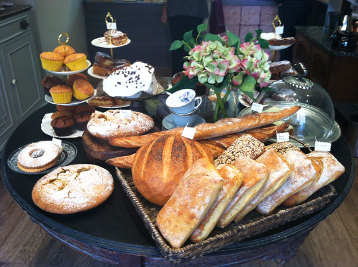

Dublin - October 11, 2013
“I live in Ireland every day in a drizzly dream of a Dublin walk.” - John Geddes
We landed in Dublin, exhausted and bleary eyed. After a dizzying cab ride, we arrived in city center. Fighting sleep (and jet lag) and lingering over a cup of coffee in a small cafe is my first memory of the city.
 Having never been to Ireland before, Dublin was the perfect place to start. It's so easy to get lost in a new city - around every corner were gardens, cathedrals, and shops to explore. The urban energy was contagious.
We walked and walked, until our legs were sore and our minds exhausted. Then we collapsed into bed, ready to leave the city behind and drive across the country.
Where we stayed
Pembroke Townhouse - http://www.pembroketownhouse.ie/
Where we ate
Waterloo Bar & Grill - http://www.thewaterloobarandgrill.ie/
Farm Restaurant - http://www.thefarmfood.ie/
Searson's of Baggot Street - http://searsonsbar.ie/